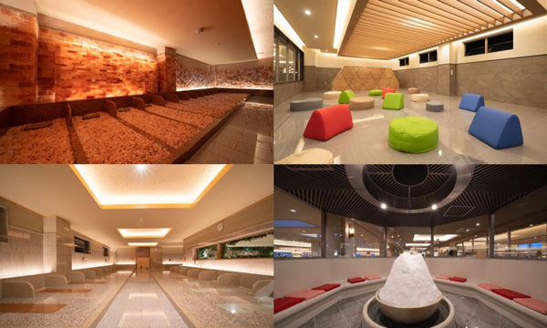

南池袋の精肉屋 「鈴源肉店」
南池袋にある精肉屋 「鈴源肉店」。
昔からある街のお肉屋さん。お弁当も販売しています。私はいつもコロッケ（110円）を注文します。
オーダーを受けてから揚げてくれるので、いつも熱々ホカホカ♪ 前もって予約注文しておくと、待ち時間を短縮できるので良いですよ。
ソースをかけるかどうかも確認してくれます。
お弁当はまだ試したことないですが、少食の人は「ご飯少なめ」とオーダーしないと、とてもじゃないけど食べきれないほどボリューミーなお弁当だそうです。
（ご飯を少なくと言えば10円位は値引きしてくれるらしいです。）
もちろん、普通のお肉屋さんなので、生肉を購入することもできます。
店員さんも元気で優しいおじいちゃんです。
@hino

スパジャポ東久留米
国内最大級の天然温泉スパジアム ジャポンは東京都東久留米市にあります。
温泉は、貴重な天然温泉、フードコート、漫画エリア、岩盤浴、リラックス空間も用意され
1日居ることが出来る通称「スパジャポ」。年中無休で無料送迎があるので手ぶらで行けます。
3Fはフードコート、リラックス空間、4Fは温泉エリア、5Fは岩盤浴エリア。
温泉は、15種類のお風呂とサウナ。「平成の名水百選」に選ばれた東久留米の湧水と同じ水源を使用している。
岩盤浴は、100床以上あり薬石によって精神や肉体に働きかけ心身の調和と再生、血行促進などに働きかけます。
その他、各種イベントも盛りだくさんあるので、一度足を運んでみてください。
@たちばな
